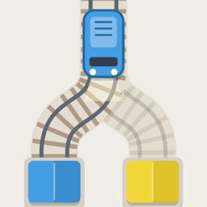

Train Chains
Flip the switches. Match the colors.
Support
Questions, a bug, or an idea for a new map? Write to ercaneraslan@gmail.com. Please include your iPhone model and iOS version if something isn't working.
How to play
- Trains leave the tunnel in one of the station colors.
- Tap a switch to change its direction. The solid branch with the arrow is where the next train goes.
- A train commits to a switch as it enters it; flipping it then only affects the trains behind.
- Deliver a train to its own color to score. A wrong station costs a heart; three hearts and the run is over.
- Earn a star on a map to unlock the next one. Color-blind mode in Settings adds a shape to every color.
Common questions
There's no sound. Check that Sound is on in Settings and that your iPhone isn't in silent mode.
My Game Center scores don't show up. Make sure you're signed in to Game Center in the iPhone Settings app; scores are sent when you finish a run.
Will my progress move to a new iPhone? Stars and best scores are saved on the device. Game Center leaderboards and achievements follow your Apple Account.